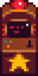
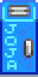

Достижения
Достижения игрока можно посмотреть в меню на соответствующей странице во вкладке коллекций. Если вы играете в игру на Steam, эти достижения (и несколько дополнительных) отображаются и там.
Достижения открывают определённые предметы. Для показа в Steam достижение достаточно открыть один раз; однако чтобы получить предметы в каждой новой игре, их нужно каждый раз получать заново.
Ещё не заработанные достижения в меню отмечены серым; некоторые достижения появляются во вкладке только после того, как заработаны. Для последовательных достижений (как, например, достижения за зарабатывание определенной суммы денег) во вкладке коллекций выводятся все заработанные и только одно достижение из последующих.
Большинство достижений открывают головные уборы, которые продает мышь в разрушенном доме в Пепельносмольном лесу. Если навести курсор мыши на шляпу в ассортименте магазина, можно увидеть, с каким достижением она связана.
Список достижений
| Иконка в Steam | Иконка в игре | Достижение | Описание | Открывает | |
|---|---|---|---|---|---|
 |
 |
Новичок (15 тыс.) | Заработать 15 000 з. |  |
Старая добрая кепка |
 |
 |
Ковбой (50 тыс.) | Заработать 50 000 з. |  |
Счастливый бант |
 |
 |
Поселенец (250 тыс.) | Заработать 250 000 з. |  |
Крутая кепка |
 |
 |
Миллионер (1 млн.) | Заработать 1 000 000 з. |  |
Котелок |
 |
Легенда (10 млн.) | Заработать 10 000 000 з. (Секретное достижение) | Сомбреро | ||
 |
|
Полная коллекция | Завершить коллекцию музейных экспонатов. |  |
Ковбойская шляпа |
 |
|
Новый друг | Достигнуть уровня дружбы в 5 сердечек с кем-либо. |  |
Бант-бабочка |
 |
Лучшие друзья | Достигнуть уровня дружбы в 10 сердечек с кем-либо. |  |
Мышиные ушки | |
 |
Наш любимый фермер | Достигнуть уровня дружбы в 10 сердечек с 8-ю людьми. |  |
Кошачьи ушки | |
 |
 |
Потому что мы - банда! | Достигнуть уровня дружбы в 5 сердечек с 4-мя людьми. |  |
Диадема |
 |
Связи | Достигнуть уровня дружбы в 5 сердечек с 10-ю людьми. |  |
Шляпа Санты | |
 |
|
Популярность | Достигнуть уровня дружбы в 5 сердечек с 20-ю людьми. |  |
Теплые наушники |
|
Повар | Приготовить 10 разных блюд. |  |
Изящный бант | |
 |
|
Су-шеф | Приготовить 25 разных блюд. |  |
Сливовая шляпа |
 |
 |
Шеф-повар | Приготовить каждое из блюд. |  |
Шляпа лучника |
 |
 |
Заживeм! | Расширить свой дом. |  |
Тропиклипс |
 |
|
Красивая жизнь | Расширить свой дом до максимального размера. (второе улучшение, а не подвал) |  |
Охотничья шляпа |
 |
|
Сделай сам | Смастерить 15 разных предметов. |  |
Маргаритка |
 |
|
Умелец | Смастерить 30 разных предметов. |  |
Бейсболка |
 |
|
Золотые руки | Смастерить каждый из возможных предметов.. |  |
Шапка гнома |
 |
|
Рыболов | Поймать 10 разных видов рыб. |  |
Зюйдвестка |
 |
|
Старый мореход | Поймать 24 разных вида рыб. |  |
Кепка от униформы |
 |
 |
Мастер рыбной ловли | Поймать каждый из видов рыб. |  |
Глазная повязка |
 |
|
Славный улов | Поймать 100 рыб. |  |
Арбузный ободок |
|
Сокровищница | Отдать в музей 40 различных предметов. |  |
Голубой чепчик | |
 |
|
Курьер | Выполнить 10 поручений с доски объявлений. |  |
Бант в горошек |
 |
|
Добрая душа | Выполнить 40 поручений с доски объявлений. |  |
Маска курицы |
 |
|
Севооборот | Отправить на рынок по 15 единиц урожая от каждой культуры. |  |
Шляпа погонщика |
 |
|
Монокультура | Отправить на рынок 300 ед. урожая от одной культуры. |  |
Шляпа девушки-ковбоя |
 |
Мастер-груз | Отправить на рынок каждый из доступных предметов. |  |
Маска гоблина | |
 |
Король прерий | Пройти «Путешествие Короля Прерий». |  |
Игровая система «Король Прерий» | |
 |
Достигнуть дна | Достичь дна шахты. | Ключ с черепом | ||
 |
Местная знаменитость | Восстановите клуб города Пеликан. | Награда герою Стардью | ||
 |
Joja Co. Игрок года | Станьте членом Джоджа и купите все проекты на бланке с проектами по общественному развитию Джоджа. |  |
Автомат с газировкой | |
 |
Загадка падающих звезд | Найдите все звездные капли. | |||
 |
Домашний очаг | Вступите в брак и заведите двоих детей. | |||
 |
Единственный талант | Достигните уровня 10 в одном из навыков. | |||
 |
Мастер пяти путей | Достигните уровня 10 в каждом из навыков. | |||
 |
Защитник деревни | Выполните все задачи по истреблению монстров в гильдии искателей приключений. | |||
 |
Задание Фектора | Пройдите «Путешествие Короля Прерий», ни разу не погибнув. (Секретное достижение) | |||
|
Далекий берег | Добраться до Имбирного острова. | Бумажная шляпа | ||
|
Книжный червь | Прочесть все книги. Примечание: это относится только к книгам способностей | Кепка газетчика | ||
 |
|
Два пальца вверх | Посмотреть кино. | Шутовской колпак | |
|
Голубая лента | Занять первое место на Ярмарке долины Стардью. | Голубая лента | ||
|
Незабываемый суп | Порадовать губернатоа. | Шляпа губернатора | ||
 |
|
Добрые соседи | Помочь своим лесным соседям вырастить семью. | Белый бант | |
 |
Опасные глубины | Спуститься на дно «опасных» шахт. | Шлем космонавта | ||
 |
|
Безудержная сила | Заполучить самое мощное оружие. | Корона Бесконечности | |
 |
|
Совершенство | Достигните вершины. | Шапка Джунимо | |
Примечания
Рыболовецкие достижения
Выловленные белая, зеленая и морская водоросли засчитываются для четырёх связанных с рыбной ловлей достижений («Рыболов», «Старый мореход», «Мастер рыбной ловли» и «Славный улов»). Выловленный мусор для достижений не засчитывается.
Севооборот
Чтобы заработать достижение «Севооборот» (отправить на рынок по 15 единиц урожая от каждой культуры), нужно отгрузить 28 следующих культур:
Монокультура
Для достижения «Монокультура» (отправить на рынок 300 ед. урожая от одной культуры) можно выбрать одну из 33 культур: любую из 28 культур, перечисленных выше, или
Ретроактивные достижения
В редких случаях достижение может не разблокироваться корректно в редких случаях (например, если игра не смогла отправить достижение на платформу, такую как Steam). Пропущенные достижения будут автоматически повторно отправлены при загрузке сохранения или после сна в игре.
На консолях PlayStation и Xbox игра не может автоматически повторно отправлять достижения. Вместо этого они будут отправлены повторно при выполнении соответствующего действия:
| Пропущенное достижение | Повторная отправка при |
|---|---|
| Полный дом | Поцелуйте своего супруга. |
| Легенда местного масштаба Член года корпорации «Джоджа» |
Войдите в Общественный центр или ДжоджаМарт. |
| Тайна звездных капель | Посетите пещеру мастерства. |
| Король Прерий Испытание Фектора |
Начните игру Путешествие Короля Прерий. |
| Защитник долины | Убейте любого монстра. |
| Уникальный талант Мастер пяти путей |
Посетите пещеру мастерства. |
| Дно | Посетите 120-й уровень шахт. |
Внешние ссылки
- Пользователи, имеющие доступ к своим сохраненным файлам игры могут найти утилиту "Stardew Checkup" полезной для отслеживания прогресса своих достижений. Утилита находится по адресу: https://mouseypounds.github.io/stardew-checkup/
- Глобальную игровую статистику достижений можно найти для:
- PlayStation по адресу: https://www.truetrophies.com/game/Stardew-Valley/trophies
- Steam по адресу: https://steamcommunity.com/stats/413150/achievements/
- Xbox по адресу: https://www.trueachievements.com/game/Stardew-Valley/achievements/
История
- 1.05: Исправлена ошибка в «Задании Фектора».
- 1.4: Исправлена ошибка, позволявшая получить достижение «Мастер рыбной ловли» до поимки всех рыб.
- 1.5: Обручальное кольцо больше не нужно создавать в мультиплеере для получения достижения «Золотые руки».
- 1.6: Добавлены новые достижения. Изменены значки для некоторых существующих достижений.
- 1.6.9: Теперь игра повторно отправляет большинство пропущенных достижений. Для игроков на PlayStation/Xbox пропущенные достижения восстанавливаются при выполнении определенного действия.